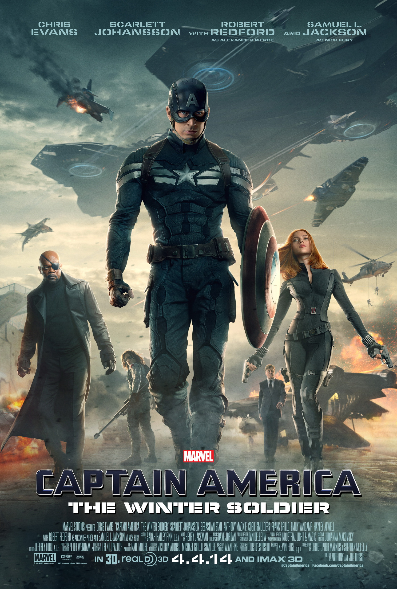
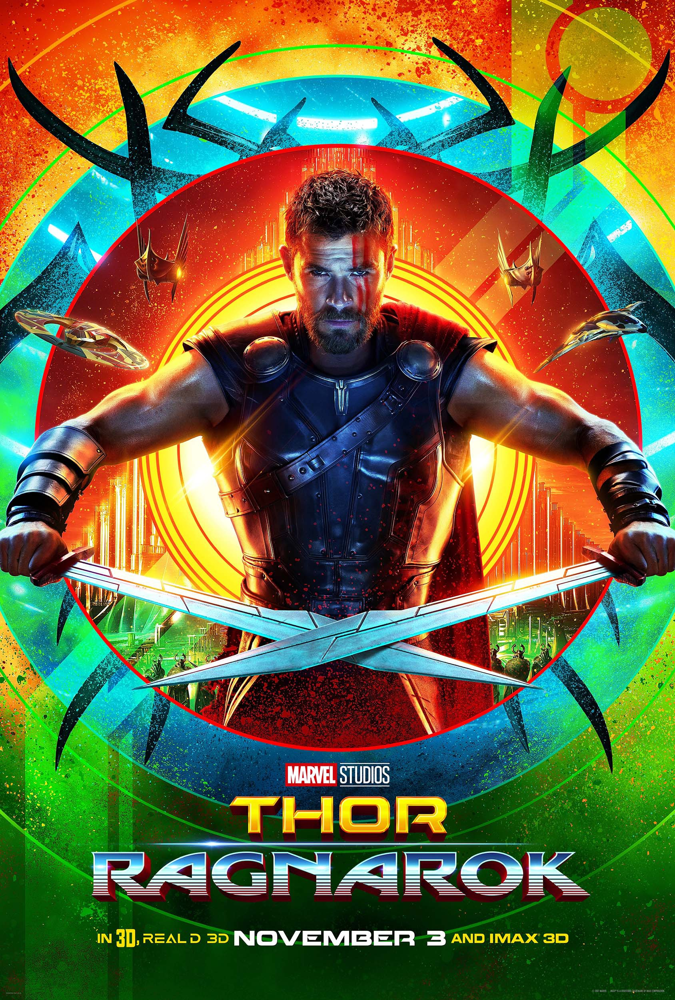

Welcome!
Entering the Marvel Cinematic Universe can be intimidating. Afterall there are 20 movies with more on the way and 9 television series. On this website you will find a guide to almost everything Marvel Studios has made for their cinematic universe including full lists of the movies and tv shows as well as a list of my own top five favorite movies in the universe.
Below you will find a list of the biggest part of the cinematic universe. It's the movies of course! Beside each movie poster will be a short description of the plot and how it fits into the larger universe as a whole. Below each description is my own personal rating of that movie.
A Guide to the Movies
 |
Iron ManThe movie that started it all. After a weapons demonstration in Iraq, billionaire and genius Tony Stark is captured by a terrorist organization. The capture also results in him having a chest filled with shrapnel. While held captive, he finds a way to miniaturize his arc reactor technology to power the magnet that keeps the shrapnel from getting to his heart. He also realizes that this power source could power somethings else, so with scraps he builds an iron suit to escape his captors. Once home, he devotes his time to perfecting the Iron Man suit so he can protect mankind. His actions catch the attention of SHIELD, and introduce us to Nick Fury and the Avengers Initiative. My Rating: 7.5 out of 10 |
 |
The Incredible HulkBruce Banner survives a deadly gamma radiation accident, but at a cost. Under emotional stress Banner becomes a giant green rage monster. He goes on the run from the military, who hope to use his condition as a military weapon, trying to find a cure for his condition. A new threat rises called the Abomination, who is a deadly and terrifying beast who can match the Hulk’s powers. My Rating: 6 out of 10 |
 |
Iron Man 2With the world now aware that Tony Stark is the armored hero Iron Man, Stark faces a multitude of problems. The government wants him to share the technology of his suit, the thing keeping him alive is poisoning him, and a now a man is out to kill him in order to avenge his father who worked with Tony’s father, Howard, before getting deported to Russia. This movie also introduces us to the character of Black Widow and makes Nick Fury a more prominent part of the MCU. My Rating: 6.5 out of 10 |
 |
ThorThor is the heir to the throne in the fantastical realm of Asgard. After an incident that almost leaves some of his friends and fellow asgardians dead, he is cast out of Asgard, stripped of his power, and sent to live on Earth by his father Odin for his arrogance. While on Earth, Thor falls in love with the scientist Jane Foster. With her help and the help of others he meets, Thor must learn what it truly means to be a hero to stop Loki and save Asgard. My Rating: 6.5 out of 10 |
Captain America: The First AvengerDuring World War Two, Steve Rogers wants nothing more than to join the military and fight for his country, but he can’t pass the physical, having tried several times under several names. Things change when Dr. Erskine senses his good heart and recruits him for a secret project. Rogers is experimented on with a “super soldier serum” that transforms his weak body into a superhuman. Rogers becomes Captain America and is at first used for propaganda. When his friend is captured, Captain America goes on a rescue mission. Once people realize what he can do, Captain America is tasked with stopping the Nazi organization HYDRA. My Rating: 6.7 out of 10 |
|
The AvengersThis is the start of the MCU being truly connected. SHIELD has located Captain America and a mysterious object known as the Tesseract. Suddenly Loki, the brother of Thor, has arrived on Earth and has stolen the Tesseract. Loki wants to use its powers as a gateway through space to bring the Chitauri Army to Earth to aid him in his world takeover. Facing this threat, Nick Fury assembles a team made up of Iron Man, Hulk, Black Widow, Captain America, Thor and Hawkeye to stop Loki. Together they form the Avengers. My Rating: 8 out of 10 |
|
 |
Iron Man 3After the Avengers Tony Stark has been struggling with the aftermath of the battle of New York. He can't stop building suits and is suffering from PTSD and anxiety. However, there is a new threat known as the Mandarin on the rise. After his home is destroyed and his friend almost killed by the Mandarin, Tony must find a way to stop him facing his own inner demons and demons of his past. My Rating: 6.8 out of 10 |
Thor: The Dark WorldWhen Jane Foster discovers a powrful entity known as the Aether, she becomes cursed with it and also unknowingly awakens the evil Malekith and his army of Dark Elves. Fearing the cosmic event of Convergence, Thor must form an uneasy alliance with Loki to help save Jane and the genocidal Dark Elves from putting the nine realms through total chaos and darkness. My Rating: 6 out of 10 |
|
|  | Captain America: The Winter SoldierSteve Rogers is still struggling to acclimate to the modern world, but is finding it easier working as a soldier for SHIELD. However he soon learns that SHIELD has been compromised and is not sure who he can trust anymore. There is also a new threat to Captain America, an assassin known as the Winter Soldier. Captain America must team up with Black Widow and a new hero known as the Falcon to stop both threats. My Rating: 9 out of 10 |
 |
Guardians of the GalaxyWhen he was young, Peter Quill was kidnapped by aliens and taken from Earth. Now he a conman who travels the galaxy and salvages anything he can resell. He becomes the target of a manhunt when he discovers and orb that is highly desired by the genocidal Ronan the Accusar. In order to stop Ronan from taking over the Galaxy, Quill teams up with a band of misfits and criminals made up of Gamora, Rocket Racoon, the sentient plant lifeform Groot, and Drax the Destroyer. Together they become the Guardians of the Galaxy. My Rating: 8 out of 10 |
 |
Avengers: Age of UltronIn the sequel to the Avengers, the team finds themselves hunting down remaining branches of HYDRA after the events of the Winter Soldier. Attempting to make the work of the Avengers easier, Tony Stark uses the intelligence found in Loki's sceptor to create a peacekeeping program known as Ultron. Ultron sees that the only way to create peace is to destroy humanity and the Avengers must stop the problem Stark created. Age of Ultron introduces the characters of Scarlet Witch, Quicksilver, and Vision into the MCU. My Rating: 7 out of 10 |
 |
Ant-ManAfter just being released from prison for robbery that he saw as justified, Scott Lang must now steal again in order to help Dr. Hank Pym keep his Pym Particle technology out of the wrong hands. Lang is given the use of Pym's Ant-Man suit, which gives him the ability to shrink in size, but increase his strength. Using the suit, Lang must steal a new suit from Darren Cross before he can sell the technology and creat chaos around the world. My Rating: 6.9 out of 10 |
 |
Captain America: Civil WarAfter the events of Age of Ultron in Sokovia and another event that causes collateral damage, world leaders and political organizations come together and decide that the Avengers and othered powered people should have to answer to an outside organization. The decision leaves the members of the Avengers with two choices: retire and remain free or register and answer to governments. This causes a rift between members of the team, especially Captain America and Iron Man. Cap believes that heroes should remain free as governments can be corrupted while Stark suprisingly sides with the government. The conflict is further complicated when it appears that the king of Wakanda has been killed by Cap's old friend Bucky. Captain America must work to protect his friend from Tony and a new threat that could tear the Avengers apart for good. My Rating: 8.5 out of 10 |
 |
Doctor StrangeStephen Strange is a brilliant but incredibly arrogant neurosurgeon, but a car accident robs him the use of his hands. Struggling with not being able to perform surgeries anymore, Strange goes on a journey to heal his hands, but gets caught up in the mystic arts and the teachings of the Ancient One. When a vengeful former student looks to bring darkness to the world in an effort to gain eternal life, Strange must learn to use the magic and become the Sorcerer Supreme to stop him. My Rating: 7 out of 10 |
 |
Gaurdians of the Galaxy Vol. 2Morbi in ipsum imperdiet, volutpat mauris eget, egestas ligula. Fusce pellentesque metus turpis, et condimentum erat pellentesque id. Duis vehicula quam eu erat dictum, a lobortis nulla vulputate. Donec scelerisque sagittis nisi quis pharetra. Curabitur rutrum nunc vel augue convallis condimentum. My Rating: _ out of 10 |
spider-Man:HomecomingMorbi in ipsum imperdiet, volutpat mauris eget, egestas ligula. Fusce pellentesque metus turpis, et condimentum erat pellentesque id. Duis vehicula quam eu erat dictum, a lobortis nulla vulputate. Donec scelerisque sagittis nisi quis pharetra. Curabitur rutrum nunc vel augue convallis condimentum. My Rating: _ out of 10 |
|
|  | Thor: RagnarokMorbi in ipsum imperdiet, volutpat mauris eget, egestas ligula. Fusce pellentesque metus turpis, et condimentum erat pellentesque id. Duis vehicula quam eu erat dictum, a lobortis nulla vulputate. Donec scelerisque sagittis nisi quis pharetra. Curabitur rutrum nunc vel augue convallis condimentum. My Rating: _ out of 10 |
 |
Black PantherMorbi in ipsum imperdiet, volutpat mauris eget, egestas ligula. Fusce pellentesque metus turpis, et condimentum erat pellentesque id. Duis vehicula quam eu erat dictum, a lobortis nulla vulputate. Donec scelerisque sagittis nisi quis pharetra. Curabitur rutrum nunc vel augue convallis condimentum. My Rating: _ out of 10 |
 |
Avengers: Infinity WarMorbi in ipsum imperdiet, volutpat mauris eget, egestas ligula. Fusce pellentesque metus turpis, et condimentum erat pellentesque id. Duis vehicula quam eu erat dictum, a lobortis nulla vulputate. Donec scelerisque sagittis nisi quis pharetra. Curabitur rutrum nunc vel augue convallis condimentum. My Rating: _ out of 10 |
 |
Ant-Man and the WaspMorbi in ipsum imperdiet, volutpat mauris eget, egestas ligula. Fusce pellentesque metus turpis, et condimentum erat pellentesque id. Duis vehicula quam eu erat dictum, a lobortis nulla vulputate. Donec scelerisque sagittis nisi quis pharetra. Curabitur rutrum nunc vel augue convallis condimentum. My Rating: _ out of 10 |